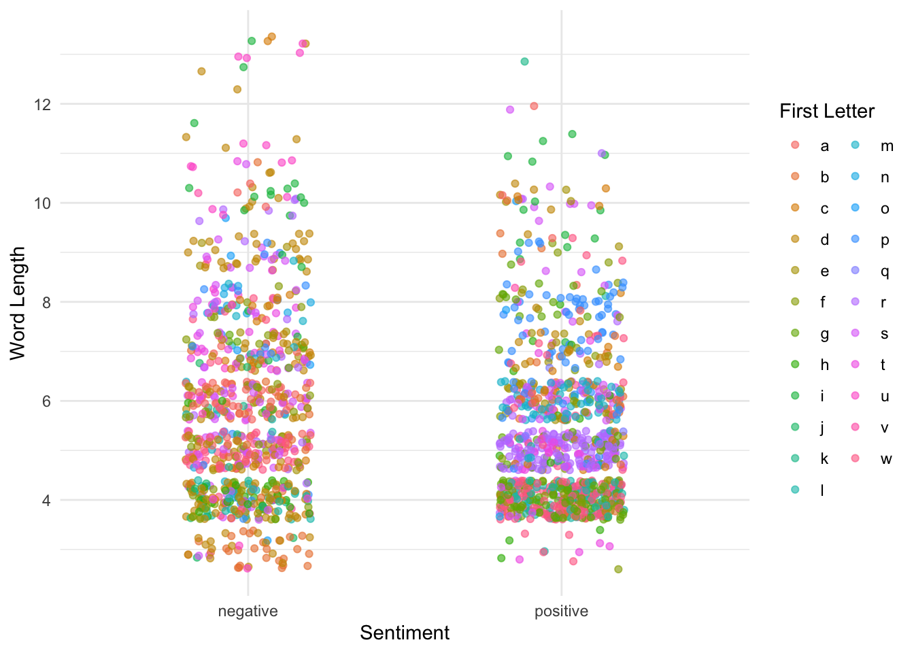
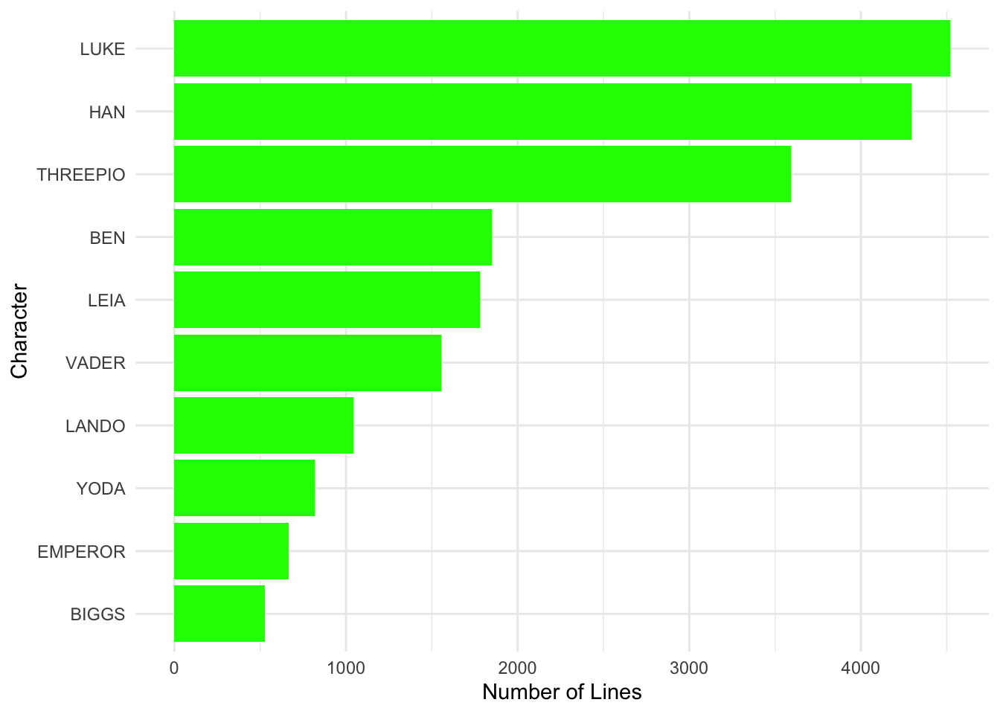

── Attaching core tidyverse packages ──────────────────────── tidyverse 2.0.0 ──
✔ dplyr 1.1.4 ✔ readr 2.1.5
✔ forcats 1.0.0 ✔ stringr 1.5.1
✔ ggplot2 4.0.0 ✔ tibble 3.2.1
✔ lubridate 1.9.3 ✔ tidyr 1.3.1
✔ purrr 1.0.2
── Conflicts ────────────────────────────────────────── tidyverse_conflicts() ──
✖ dplyr::filter() masks stats::filter()
✖ dplyr::lag() masks stats::lag()
ℹ Use the conflicted package (<http://conflicted.r-lib.org/>) to force all conflicts to become errors
Loading required package: RColorBrewer
Loading required package: viridisLiteAnalysis of the original Star Wars Trilogy
Overview:
This mini project uses text analysis and sentiment scoring to analyze the scripts of the original Star Wars trilogy (Episodes 4–6). By breaking up the dialogue and analyzing it using differnt sentiments (Bing, NRC, and AFINN), we can see the different trends in how emotions, word choice, and character dialogue changes throughout the original trilogy.
The project focuses on several questions: What words in the movies wave the highest positive or negative connotation? How are specific emotions, like fear and trust, expressed throughout the trilogy? Which characters have the most lines, and what words do they use the most? How does the emotional tone change throughout each movie, and how do the three movies compare to each other?
Rows: 2523 Columns: 2
── Column specification ────────────────────────────────────────────────────────
Delimiter: ","
chr (2): name, line
ℹ Use `spec()` to retrieve the full column specification for this data.
ℹ Specify the column types or set `show_col_types = FALSE` to quiet this message.# A tibble: 25,937 × 3
name movie word
<chr> <chr> <chr>
1 THREEPIO new_hope did
2 THREEPIO new_hope you
3 THREEPIO new_hope hear
4 THREEPIO new_hope that
5 THREEPIO new_hope they've
6 THREEPIO new_hope shut
7 THREEPIO new_hope down
8 THREEPIO new_hope the
9 THREEPIO new_hope main
10 THREEPIO new_hope reactor
# ℹ 25,927 more rowsNegative and Positive Sentiment Scores (Eps. 4-6):
Joining with `by = join_by(word)`
For this plot I want to know the top 10 most frequent positive words and top 10 most frequent negative words used in Star Wars Episodes 4-6. This code above produces a faceted bar chart to illustrate the results.
Fear and Trust Sentiment Scores (Eps. 4-6):
Joining with `by = join_by(word)`Warning in inner_join(SW_tidy, nrc_sentiments): Detected an unexpected many-to-many relationship between `x` and `y`.
ℹ Row 13 of `x` matches multiple rows in `y`.
ℹ Row 7863 of `y` matches multiple rows in `x`.
ℹ If a many-to-many relationship is expected, set `relationship =
"many-to-many"` to silence this warning.
Insights: This plot produces similar results as the plot above but looks at the top 10 most frequent trusting words and top 10 most frequent fearful words used in Star Wars Episodes 4-6. This code also uses a faceted bar chart to showcase the results.
Word Lengths in Star Wars Dialogue:

Insights: This plot shows how the word length compares to the sentiment while also showing what letter the word starts with. It seems that words that start with f,g,h, and i tend to have a more positive connotation while words starting with s,t,u,v have a more negative connotation.
Top 10 Characters by Number of Lines in the Original Star Wars Trilogy:

Insights: I wanted to compare the number of lines differnt characters had in Star Wars episodes 4-6. I decided to pick the top 10 characters with the most lines and display them on a horizonatal histogram.
This plot is a horizontal bar chart titled “Top 10 Characters by Number of Lines in the Original Star Wars Trilogy.” On the x-axis is the lists characters making the top 10, and on the y-axis we have the number of lines that character speaks through out the trilogy. The horizontal bars are colored green (like Lukes Lightsaber) and the characters are ordered from most lines at the top to least lines at the bottom. The character with the most lines in the trilogy is Luke and the character with the tenth most lines is Biggs.
| Top 10 Most Frequent Non-Stop Words | |
|---|---|
| Star Wars Dialogue Analysis | |
| Word | Count |
| luke | 132 |
| sir | 91 |
| artoo | 84 |
| chewie | 65 |
| ship | 57 |
| time | 56 |
| master | 52 |
| father | 51 |
| vader | 51 |
| force | 50 |
Insights: For this code I wanted to find which word was said the most by each character. I had to account for stop_word (the,and,I,me, etc) but this were easily filtered out using anti_join.
Theme throughtout the Trilogy

Insights: This plot was one of my favorites to make. This is a sentiment trajectory plot for each Star Wars movie which basically shows the emotional trajectory for each of the films. All of the films seem to be relatively similar to one another with one not being dratically differnt from the others.